Коротко: Продажа абонемента — это не выручка. Это обязательство оказать услуги. Пока клиент не пришёл на занятие, деньги от абонемента — чужие.
Студия может продавать на 10 млн в месяц и при этом работать в убыток, если оказывает услуг на 1 млн, а тратит 3 млн.
Дашборд «Реализация абонементов» от Fitbase Lab показывает, сколько бизнес реально зарабатывает каждый день, где проседает расписание, какие тренеры эффективнее, кого пора продлевать — и сколько денег съедают «халявщики».
Проблема: деньги в кассе есть, а бизнес в минусе
Типичная ситуация в фитнес-студии: в кассе после продаж — несколько миллионов. Настроение отличное. Запускается реклама, планируется ремонт, тренерам выписываются бонусы. Через два месяца — зарплаты, аренда, налоги, и денег внезапно нет. Кассовый разрыв.
Обычно это списывают на сезонность, падение конверсии или «клиенты стали хуже ходить». На практике причина проще: деньги от абонементов считают выручкой. А это не выручка.
Как это работает
Когда клиент покупает абонемент на 8 занятий за 10 000 ₽, происходит следующее:
- Студия получает 10 000 ₽ на счёт.
- Одновременно возникает дебиторская задолженность — обязательство провести 8 занятий.
- Каждый раз, когда клиент приходит на тренировку, с дебиторки списывается 1 250 ₽ (10 000 ÷ 8). Вот это и есть реализация — реально заработанные деньги.
Пример из практики
Продали абонементов: на 24 млн ₽
Оказали услуг (списали с дебиторки): на 11,8 млн ₽
Разница — 12,2 млн ₽ — обязательства, которые ещё предстоит исполнить.
Потратить их сейчас = создать дыру в будущем.
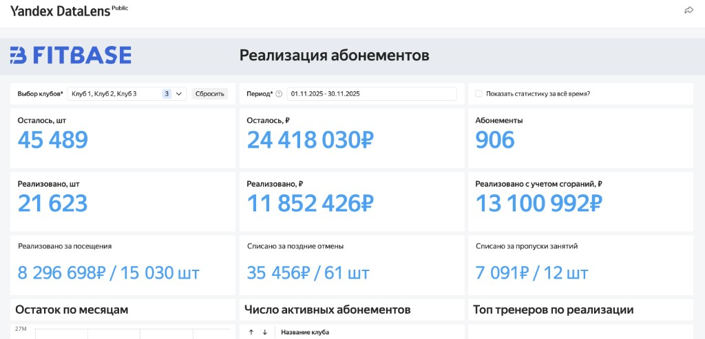
1. Что руководитель должен видеть каждую неделю
Чтобы не попасть в кассовый разрыв, важно отслеживать несколько ключевых показателей.
Сколько услуг реально оказано
То есть на какую сумму уменьшилась дебиторская задолженность. Списание происходит через:
- посещения
- поздние отмены
- no-show
- сгорание визитов
Сколько клуб ещё должен клиентам
Это остаток обязательств по активным абонементам. Если эта цифра большая — значит у клуба впереди большой объём услуг, которые ещё нужно оказать.
Растёт ли бизнес
В растущем бизнесе дебиторская задолженность обычно увеличивается, потому что база клиентов растёт. Если она падает — это сигнал: клиенты уходят, абонементы закрываются, продления не происходят.
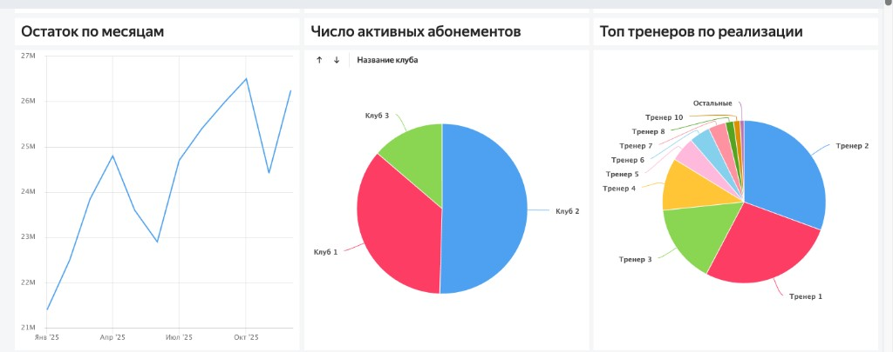
Где бизнес недозарабатывает
Важно понимать не только общие цифры, но и детали: по дням недели, по часам, по залам, по тренерам, по типам тренировок.
2. Дашборд «Реализация абонементов»
Чтобы видеть реальную картину, используется отдельный аналитический модуль. Его задача — показать, как именно абонементы превращаются в деньги.
Дебиторская задолженность
Первая цифра показывает, сколько клуб должен клиентам по активным абонементам. Для многих собственников эта цифра становится неожиданностью.
На демо-данных сети из трёх клубов: 24 418 030 ₽ дебиторки при 906 абонементах. Это 45 489 визитов, которые ещё предстоит провести.
Реализация за период
Можно выбрать любой месяц и увидеть:
- сколько денег списано за посещения — 8 296 698 ₽ (15 030 визитов)
- сколько списано за поздние отмены — 35 456 ₽ (61 шт.)
- сколько списано за no-show — 7 091 ₽ (12 шт.)
Это и есть реальные деньги, которые бизнес заработал оказанием услуг: 11 852 426 ₽ за ноябрь.
Динамика дебиторки
График показывает, как меняется задолженность по месяцам. Если линия растёт — бизнес наращивает базу. Если падает — база сокращается.
3. Главный график против кассового разрыва
Один из самых важных графиков показывает: сколько услуг оказано по месяцам.
Он помогает увидеть ключевую проблему: клуб может продавать абонементов на 10 млн в месяц, но оказывать услуг только на 1–2 млн. Именно эту сумму бизнес реально зарабатывает.
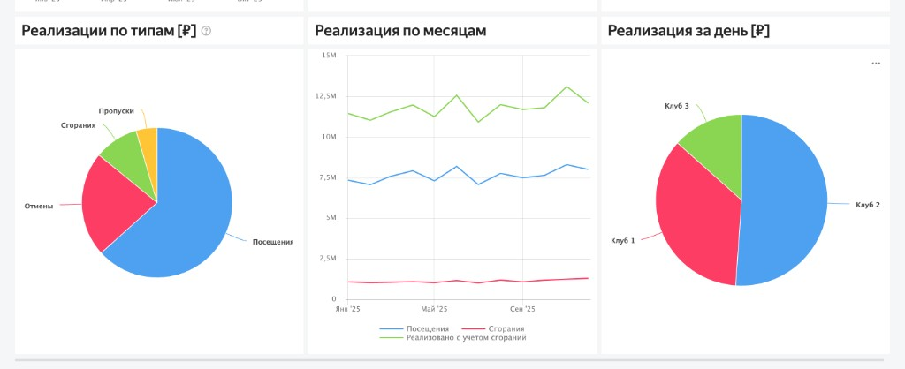
4. Ежедневная экономика студии
Отдельная таблица показывает экономику дня:
- кто пришёл
- по какому абонементу
- сколько списано
- сколько осталось визитов
Это позволяет руководителю видеть, сколько студия заработала сегодня.
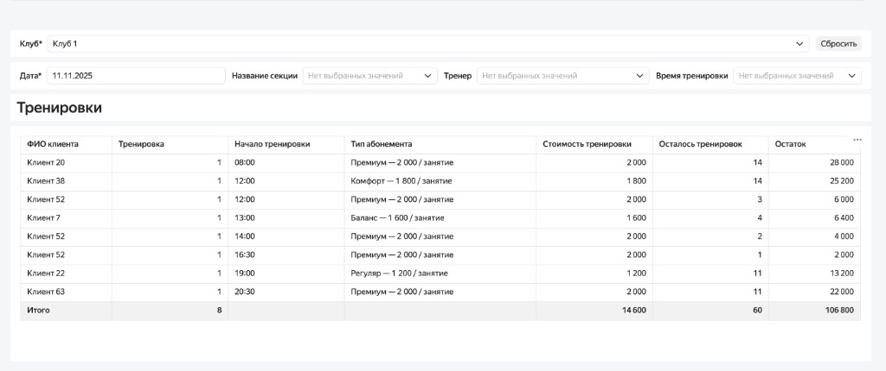
Вести такой учёт вручную невозможно — в студии с одним администратором-собственником. Дашборд автоматизирует то, что раньше просто не делалось.
5. Где теряются деньги в расписании
Тепловая карта показывает:
- дни недели
- часы
- суммы списаний
Красные зоны — где расписание работает хорошо. Синие зоны — где занятия почти не дают реализации. Это помогает корректировать расписание и загрузку студии.
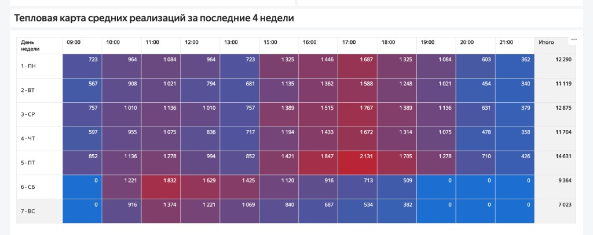
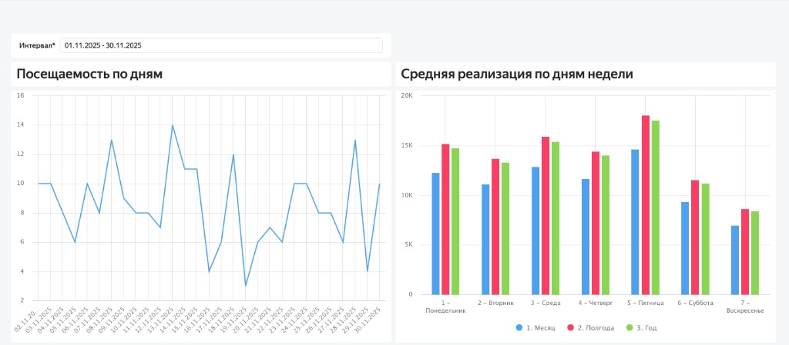
6. Тренеры и экономика тренировок
Дашборд показывает удельное списание за тренировку каждого тренера.
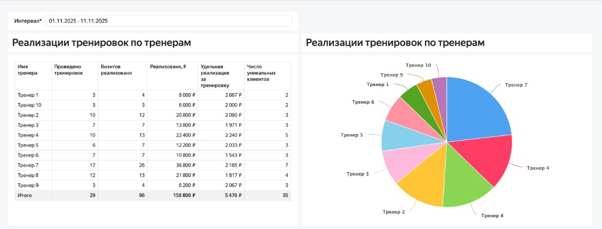
Это не вопрос «хороший или плохой тренер». Это информация о том, как разные тренировки монетизируют расписание.
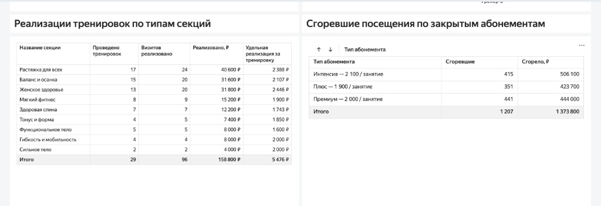
7. Сгорание абонементов
Некоторые абонементы заканчиваются не полностью использованными. Визиты сгорают — и это тоже уменьшает дебиторскую задолженность.
Дашборд показывает:
- сколько визитов сгорело
- сколько денег списано за счёт сгорания
- по каким абонементам это происходит
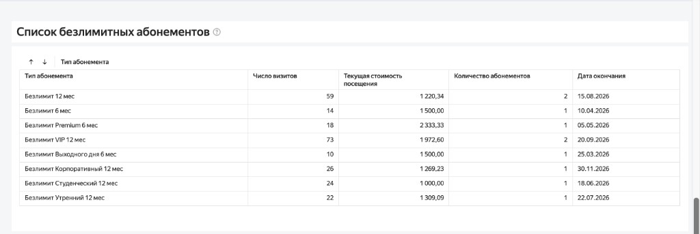
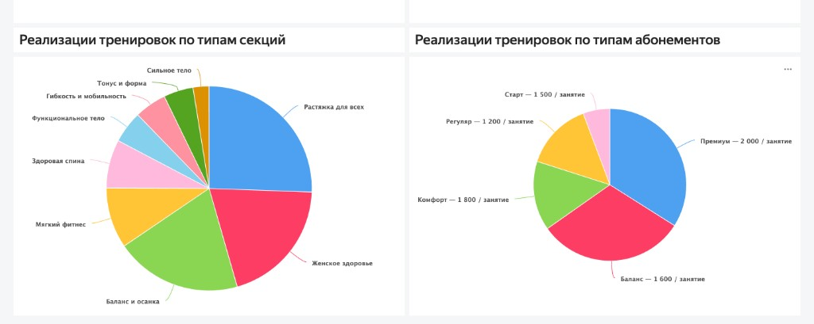
8. Продления и реактивация
Отдельный блок показывает клиентов:
- у которых скоро заканчивается абонемент
- у которых осталось мало визитов
Это позволяет менеджерам вовремя связываться с клиентами и продлевать абонементы. Также можно найти клиентов, которые недавно ушли, и попробовать их вернуть.
В таблице: количество оставшихся визитов и недель, дата окончания, сколько клиент уже заплатил, процент отхаживаемости, любимая секция — для персонализации скрипта. Выгрузка в Excel для передачи менеджерам.
9. Аномальные абонементы
Во многих студиях есть:
- бесплатные абонементы
- бартер
- программы лояльности
Такие клиенты занимают время тренеров и места в расписании, но не уменьшают дебиторскую задолженность.
Дашборд показывает: сколько таких визитов и сколько это стоит клубу.
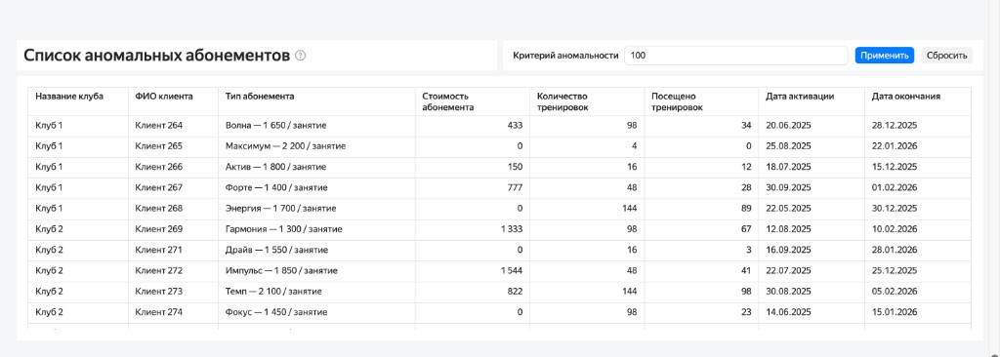
Итог
Большинство кассовых разрывов в фитнес-бизнесе появляются не из-за маркетинга.
Они появляются потому, что руководитель смотрит на продажи абонементов, а не на реализацию услуг.
Когда появляется прозрачная аналитика:
- видно реальную экономику
- понятно где теряются деньги
- легче управлять расписанием
- проще увеличивать прибыль
И тогда кассовый разрыв перестаёт быть неожиданностью.
Хотите увидеть честную картину вашего бизнеса?
Запишитесь на бесплатную консультацию к руководителю отдела аналитики Fitbase Lab. Без обязательств.
Записаться на консультацию